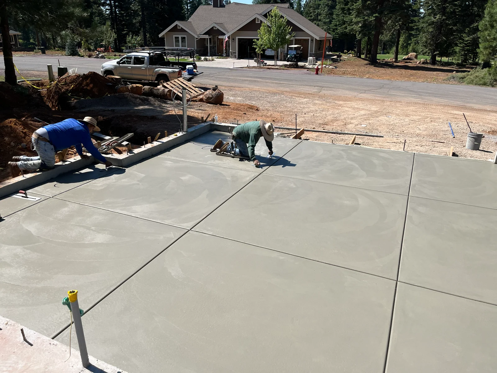
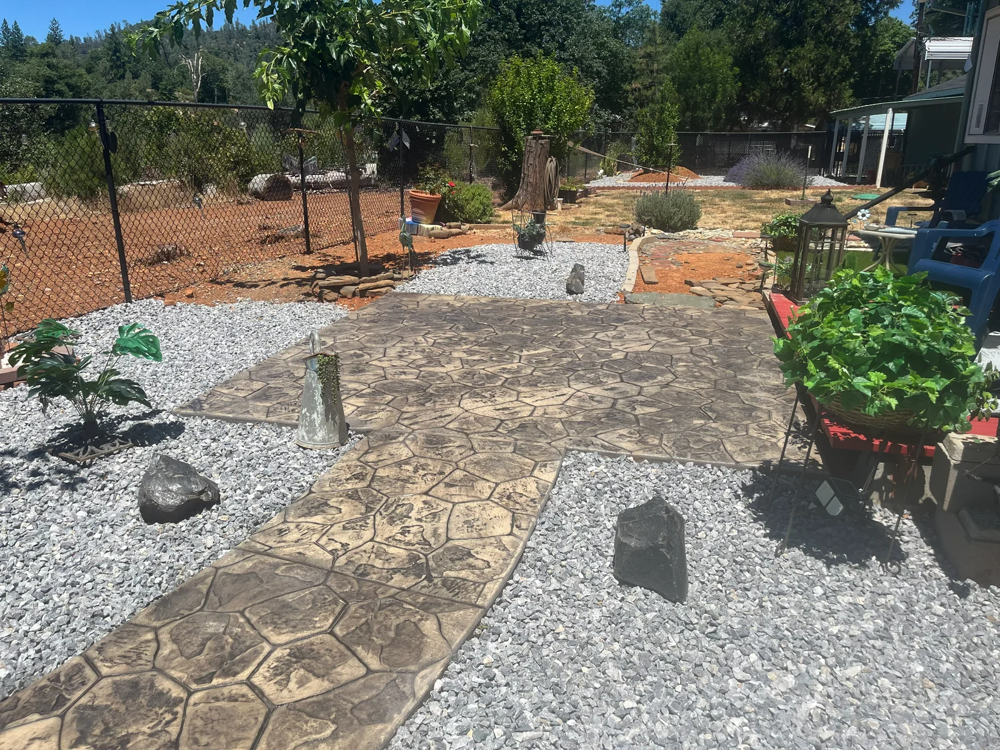
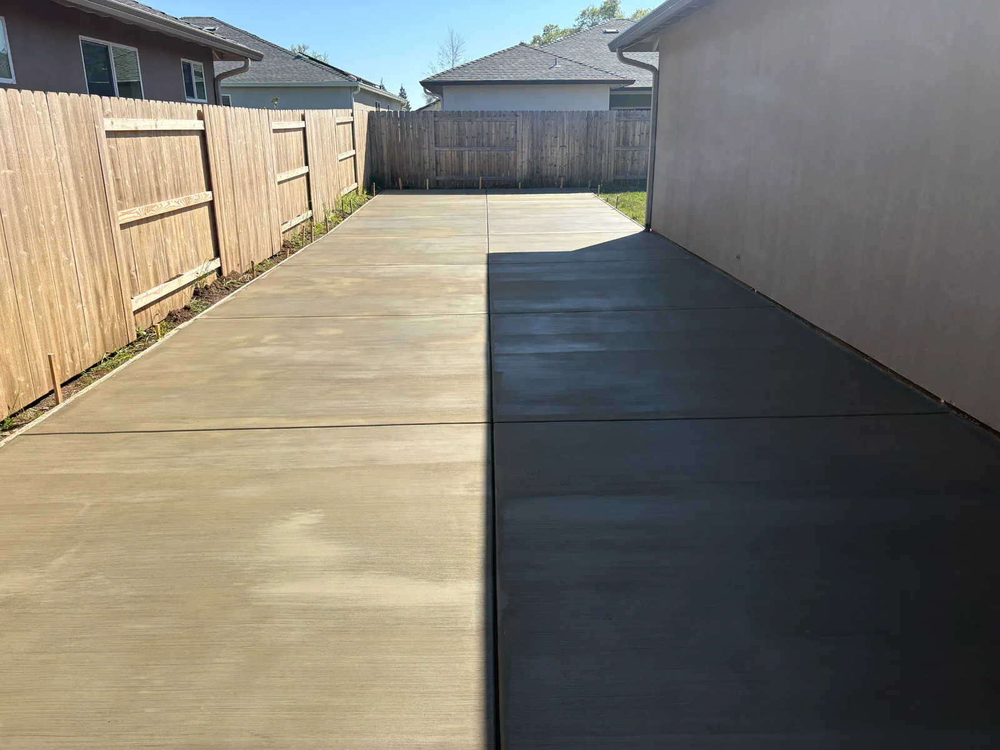
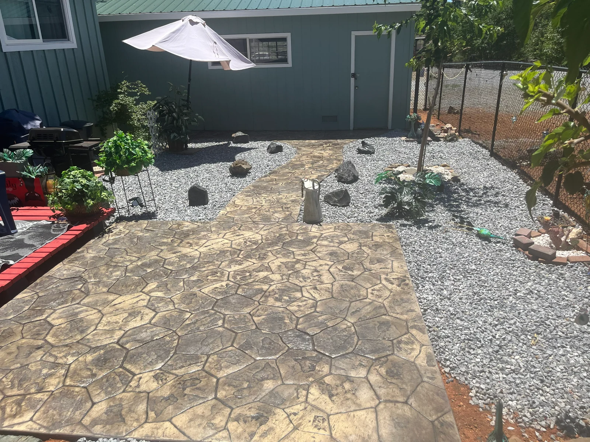
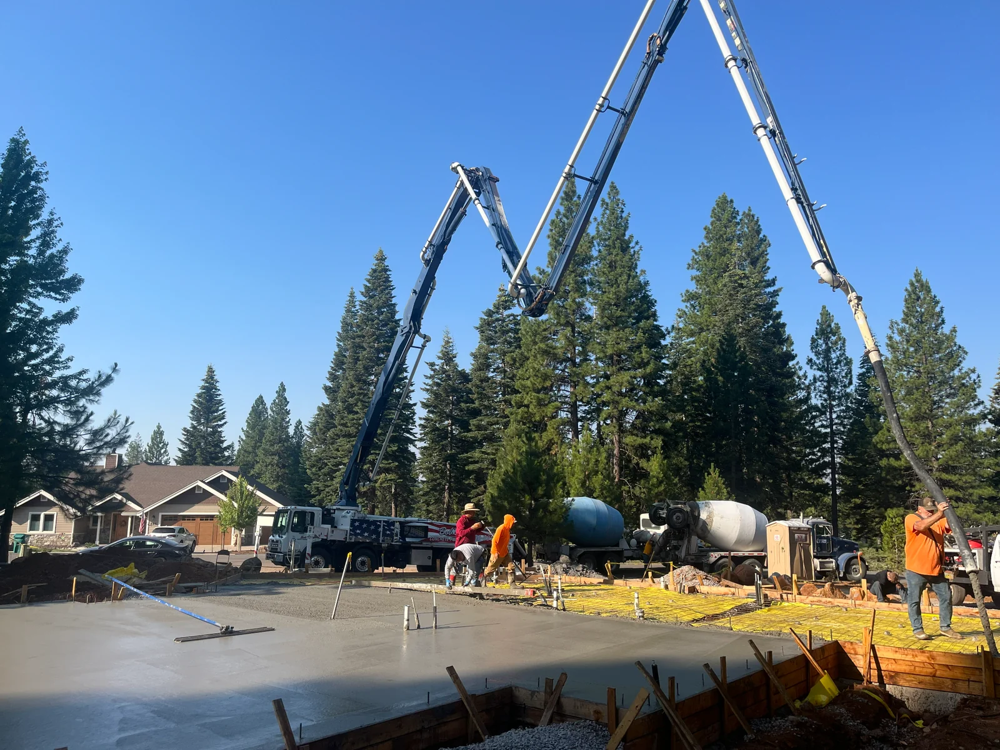
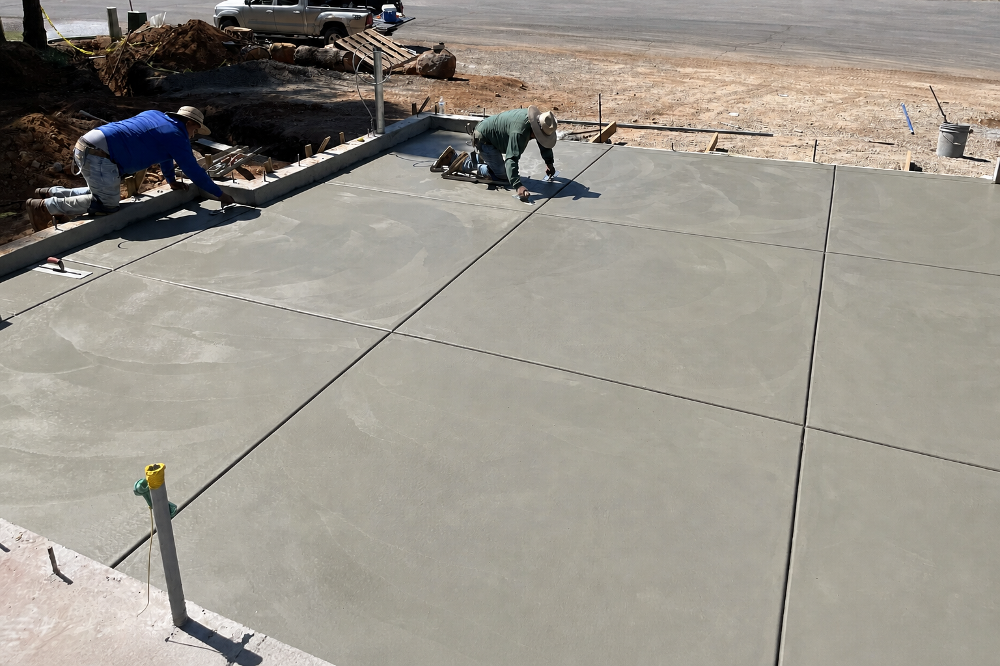
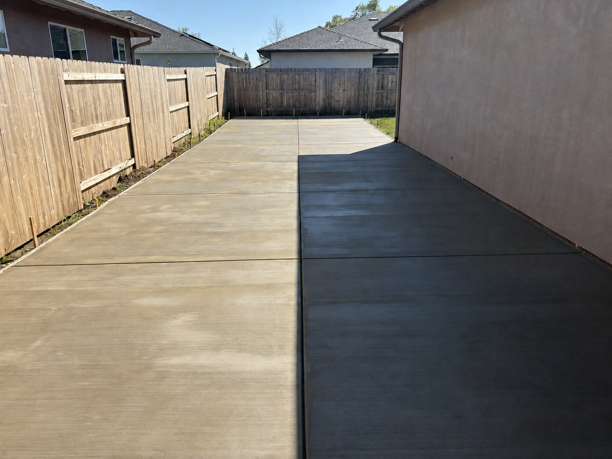
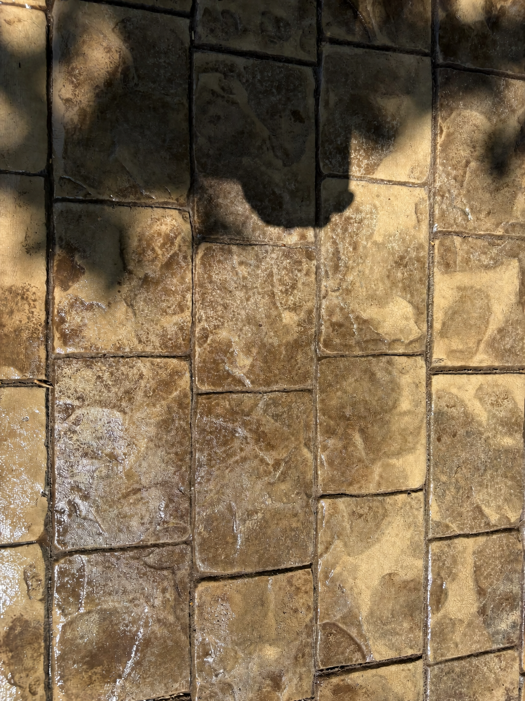
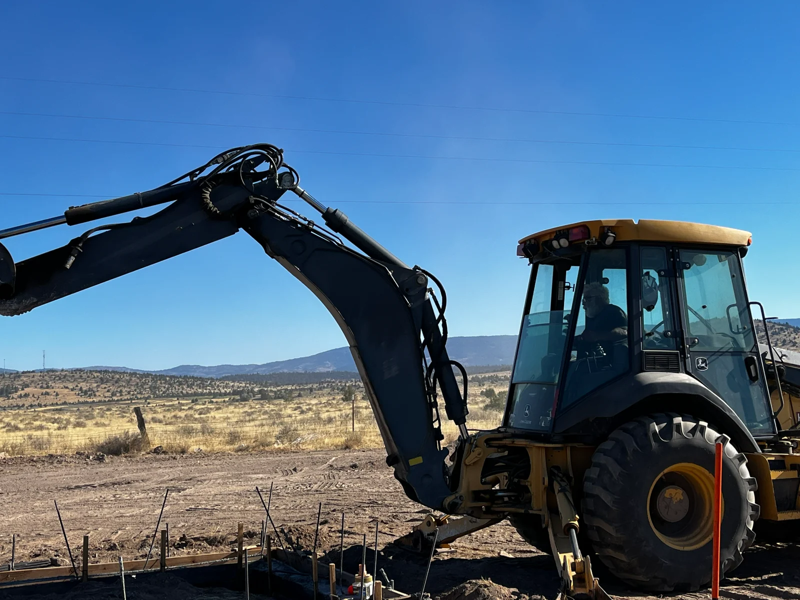
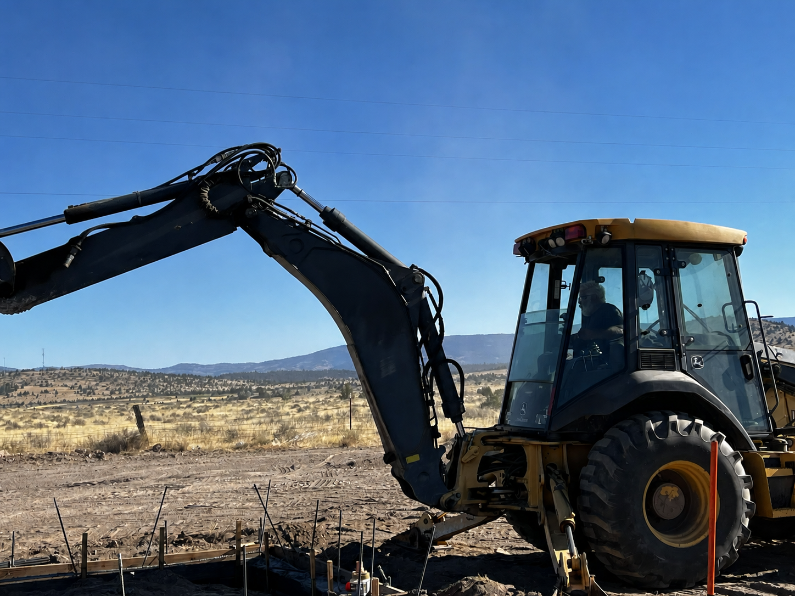

Foundations
Accurate, level, load-bearing concrete foundations for homes, additions, shops, and other structures, prepared and poured to exacting standards.
Serving All of Northern California
MD Spangler Concrete
When quality matters, precision is everything.
Serving All of Northern California
Foundations • Driveways • Walkways • Commercial Concrete • Structural Concrete
Years of hands-on
concrete experience
About MD Spangler Concrete
Melvin Dan Spangler has operated under California Contractor License #598557 since 1990. The license is held under the sole-owner name “MD SPANGLER,” while MD Spangler Concrete is the customer-facing name used for his concrete services today.
Mel’s professional history also includes Spangler Concrete & Engineering, Inc., a separate but related California corporation formed in 2004. Although the sole ownership and corporation are distinct business records, both are connected through Melvin Dan Spangler’s ownership, leadership, concrete experience, and decades-long professional history.

What we build
Accurate, level, load-bearing concrete foundations for homes, additions, shops, and other structures, prepared and poured to exacting standards.
Durable concrete driveways designed for daily vehicle loads, proper drainage, clean transitions, and lasting curb appeal.
Safe, attractive concrete walkways with precise grading, smooth transitions, clean edges, and dependable long-term performance.
Professional concrete construction for commercial properties, including slabs, flatwork, site improvements, and load-ready working surfaces.
Engineering-informed structural concrete work completed with careful reinforcement, accurate placement, and attention to load-bearing requirements.
Custom patios, entries, and outdoor surfaces that combine durable base preparation with attractive textures and detailed finishing.
Precision slabs and hand-finished concrete for metal buildings, shops, patios, repairs, and one-of-a-kind residential or commercial projects.




Why choose us
MD Spangler Concrete combines decades of field experience with licensed engineering and concrete expertise.
Reliable concrete solutions from one experienced owner/operator and one continuous professional business lineage.
Our work
A closer look at real projects completed by MD Spangler Concrete across Northern California.





Service area
Including:
Primarily serving Shasta, Tehama, and Butte Counties, Mel’s crew is available for projects throughout Northern California.
Customer reviews
“Mel is fantastic. Called me almost immediately and set up a time to talk within a day. He was honest, fair, timely and amazing at customer service which is hard to find these days. I am so happy with the end product. I wish he did more than concrete I would hire him again for any project I have.”
“I put off fixing the driveway at my home for years and as soon as I inquired about fixing it to this company they were on it. Mel is beyond helpful and gave me such a reasonable price, the driveway has truly transformed the whole look of my home and I could not be more grateful.”
“Mel did the most amazing job on my driveway/patio/ and the walkway on my home. He was friendly, on time, and super detail-oriented. The final result was exactly what we wanted, smooth, sturdy, and really well-done. They even went the extra mile with the decorative touches on our patio, making it look fantastic. Plus, they left the place spotless when they were done. Top-notch service and great results!”
Common questions
Engineering-grade precision, 40+ years of experience, and a homeowner-focused approach.
Yes — MD Spangler Concrete completes both residential and commercial concrete projects with clear communication and precise workmanship.
Foundations, driveways, walkways, commercial concrete, structural concrete, decorative concrete, slabs, patios, and custom flatwork.
Mel has a full crew ready to work. Most projects can begin quickly depending on scope.
Start your project
Tell us what you’re building.
We’ll bring the experience, precision, and straight answers to move it forward.
Call or text
530-917-5727Business address
2521 Hill Top DriveHoursMonday–Saturday: 8:00 AM–8:00 PMSunday: Closed
California Contractor LicenseNo. 598557 — A (General Engineering) and C-8 (Concrete)